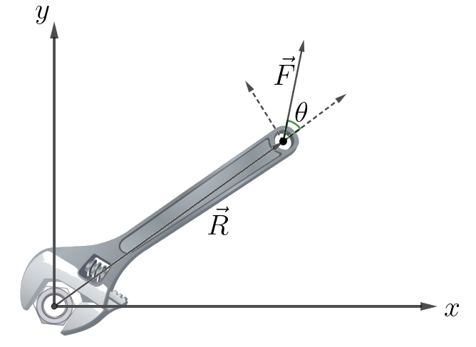
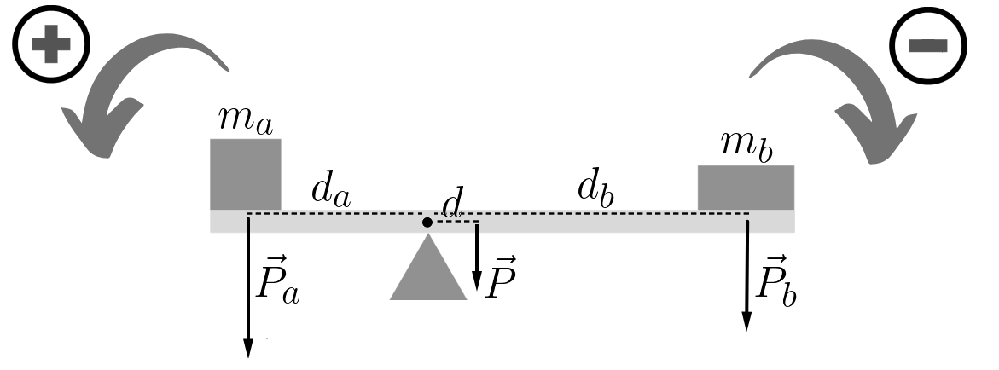
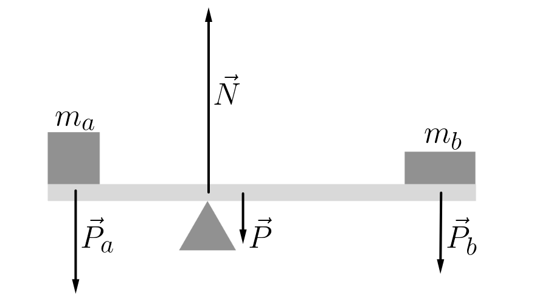
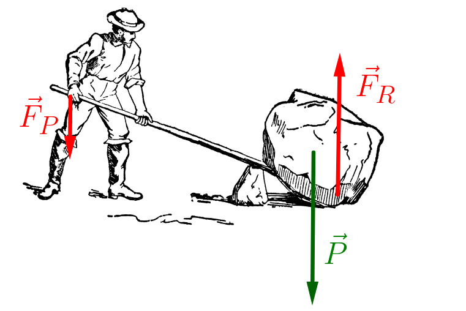
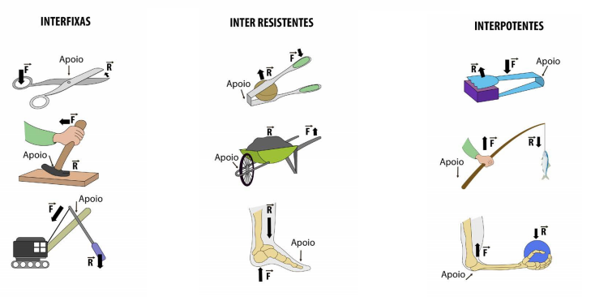

Aula4-32: Torque, alavancas e equilíbrio de corpos extensos
Torque

O torque é a grandeza física associada à tendência de rotação de um corpo. Ao usar uma chave, por exemplo, o torque sobre o parafuso depende da força aplicada, da distância até o eixo de rotação e do ângulo entre a força e a chave.
O módulo do torque pode ser calculado por:
Nessa expressão, F é o módulo da força, d é a distância entre o ponto de aplicação da força e o eixo de rotação, e θ é o ângulo entre a força e esse segmento. O fator sen(θ) seleciona a componente perpendicular da força, pois a componente paralela não produz torque.
⚛ UNIDADE DE MEDIDA NO SI:
Equilíbrio de corpos extensos
Um corpo extenso está em equilíbrio estático quando satisfaz, simultaneamente, as condições de equilíbrio rotacional e translacional:
-
Equilíbrio rotacional: a soma dos torques que atuam sobre o sistema deve ser nula. Adotaremos como positivo o torque que tende a produzir rotação no sentido anti-horário e como negativo o torque associado ao sentido horário.

Outra forma de expressar a mesma condição é igualar a soma dos módulos dos torques no sentido horário à soma dos módulos dos torques no sentido anti-horário:
-
Equilíbrio translacional: além do equilíbrio dos torques, a força resultante deve ser nula. Portanto, as componentes das forças nos eixos horizontal e vertical devem se equilibrar. No exemplo, a força normal para cima equilibra os pesos que atuam para baixo.

Brincando de gangorra
Em uma gangorra, podemos alterar a tendência de subir ou descer mudando a posição do corpo. Ao afastar o centro de massa do ponto de apoio, aumentamos o braço de alavanca e, consequentemente, o módulo do torque produzido pelo peso.
Alavancas
Uma alavanca é uma barra que pode girar em torno de um ponto de apoio. Nela, aplicamos uma força potente para exercer uma força resistente sobre outro corpo. Dependendo das distâncias ao apoio, uma força pequena pode produzir uma força resistente maior.

No exemplo ao lado, considere apenas as componentes verticais. O homem aplica sobre a barra uma força para baixo, chamada força potente. A barra tende a girar e exerce, na extremidade oposta, uma força resistente para cima. Se essa força superar o peso do objeto, ele será levantado.
Tipos de alavancas
As alavancas são classificadas em interfixas, inter-resistentes e interpotentes. A classificação depende do elemento que ocupa a posição intermediária: o ponto de apoio, a força resistente ou a força potente.

Vantagem mecânica
A vantagem mecânica compara a força resistente produzida pela alavanca com a força potente aplicada. No equilíbrio, ela também corresponde à razão entre o braço potente e o braço resistente: